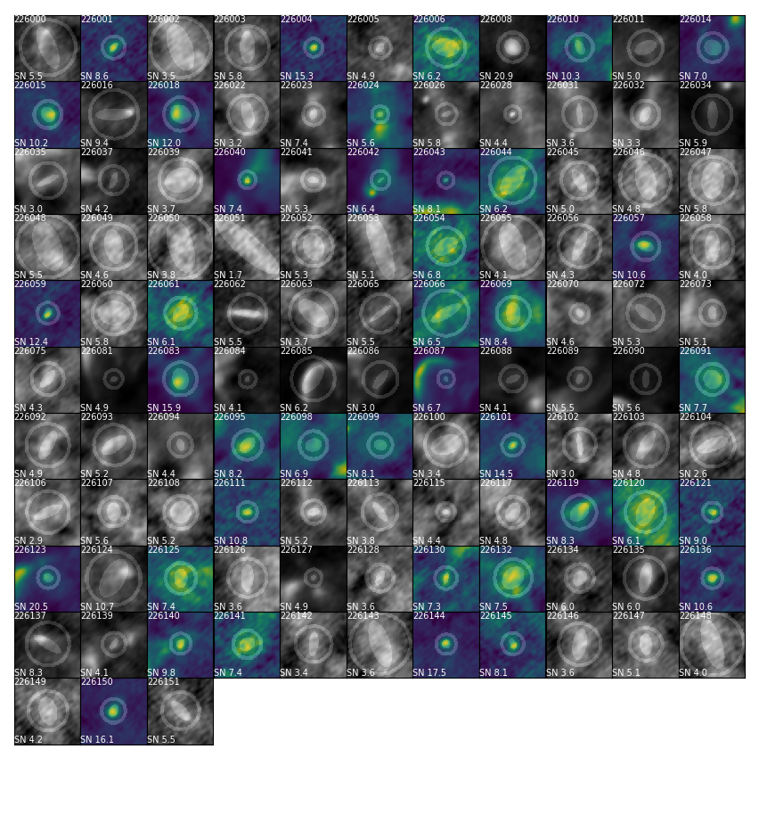
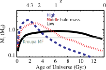

Star Formation in Crowds
Star formation changes with environment,
and high-mass stars define the neighborhood
John Bally, Ashley Barnes, Nate Bastian, Cara Battersby,
Henrik Beuther, Crystal Brogan, Yanett Contreras, Joanna
Corby, Jeremy Darling, Chris De Pree, Roberto Galván-Madrid,
Guido Garay, Jonathan Henshaw, Todd Hunter, J. M. Diederik
Kruijssen, Steven Longmore, Xing Lu, Fanyi Meng, Elisabeth A.C.
Mills, Juergen Ott, Jaime E. Pineda, Álvaro Sánchez-Monge,
Peter Schilke, Anika Schmiedeke, Daniel Walker, David Wilner,
Leonardo Testi, Rowan Smith, Ke Wang, James Dale, Jeremy
Darling, Robert Loughnane, Nate Bastian, Erik Rosolowsky,
Ciriaco Goddi, Brett McGuire, Dick Plambeck, Melvyn Wright
Students:
Anna McLeod, Connor McClellan, Justin Otter, Natalie Butterfield, Terry Melo, Virginie Montes
Slides available at https://keflavich.github.io/talks/colloquium_HMSF_orion.html
Software
Star formation drives the evolution of the universe
Star Formation oversimplified
Ṁ
L / M
Star Formation oversimplified
Ṁ
The star formation rate, how much gas turns to stars
L / M
Star Formation oversimplified
Ṁ
The star formation rate, how much gas turns to stars
L / M
The light produced by stars. Stellar population and individual star properties.
High-mass stars produce light & heavy elements
low-mass stars live practically forever


Point color shows effective temperature, point size shows luminosity (left) and mass (right)
The stellar initial mass function (IMF)
Stars are randomly sampled from this distribution
Almost all of the light in star-forming galaxies is produced by high-mass stars
The stars form in and from gas
Most of what we know of star formation in detail comes from small local clouds
Most of what we know of star formation in detail comes from small local clouds
Cartoon of low-mass star formation

Most of what we know of star formation in detail comes from small local clouds
They contain only low-mass stars and do not represent star formation in general
Most stars form in denser regions
NGC 3603 is a high-mass (104 M⊙) cluster
In denser (parts of) galaxies, more stars form in clusters
Star formation drives the evolution of the universe
Most stars in most galaxies formed long ago
Galaxies were smaller & denser back then
Our own Galaxy's center, the CMZ, has denser gas than the Galactic average
Cold Dust
Hot, ionized gas
Hot dust/PAHs
Hot, ionized gas
Hot dust/PAHs
Our own Galaxy's center, the CMZ, has denser gas than the Galactic average
Our own Galaxy's center, the CMZ, has denser gas than the Galactic average
The "Bound Cluster Fraction" is higher in the CMZ
Summary so far:
- At higher density, more stars form in clusters
- Galaxies were denser in the past
- Most stars formed when galaxies were denser
- Most stars formed in or near high-mass clusters, in regions unlike the "local neighborhood"
How is star formation in high-mass clusters different?
- Feedback from one star affects many in clustered regions
- IMF depends on density, feedback, global conditions (e.g., Jones & Bate 2018, Narayanan & Dave 2012)
- Total star formation efficiency is higher.
- Collisions assemble the most massive stars?
(e.g., Fujii+ & PZ 2013, but see Moeckel & Clarke 2011)
-
Interactions certainly affect disks (e.g., Wijnen+ 2017, Vincke+ 2016)
-
Cartoon of high- and low-mass star formation
Main difference: massive stars affect their surroundings

Classic HII region feedback:
O-stars clear out their environment
Accreting massive young stars affect their environment
Accreting massive young stars affect their environment
Accreting massive young stars affect their environment
Accreting massive young stars affect their environment
The characteristic fragmentation scale is larger
Jeans Mass MJ = (π/6)c3sG−3/2ρ−1/2
The "hot cores" appear to contain 15-50% of the star-forming gas
The cartoon in the context of HMSF

These high mass cores suppress low-mass star formation in their vicinity,
which could mean they prevent LMSF in the cores of stellar clusters
More extreme: 'cooperative accretion'

With enough high-mass stars forming concurrently, massive stars may prevent fragmentation entirely.
If they still have enough gravity to bind the gas, the remaining gas is forced onto the most massive gravitational sinks.
If they still have enough gravity to bind the gas, the remaining gas is forced onto the most massive gravitational sinks.
There is evidence for top-heavier mass functions in high-mass clusters
Summary part two:
- High mass stars heat their environment, preventing lower-mass stars from forming
- The feedback from high-mass stars is exaggerated in denser regions
- By cooking their surroundings, high-mass stars help themselves form, and they may help create their own siblings
Large scales again:
What governs the star formation rate?
Turbulent ISM models
Turbulent ISM models
Turbulent ISM models
Local cloud studies led to the idea of a gas density threshold for star formation
Thresholds are used in simulations to say
"if gas reaches this density, turn it into stars"
"if gas reaches this density, turn it into stars"
The California molecular cloud, a local example
In local clouds, Spitzer, Herschel, CSO Bolocam, and JCMT SCUBA are used to count protostars
The California molecular cloud with protostars
ALMA enables protostar counting in
distant, massive clouds
Sgr B2: the most massive & star-forming cloud in the Galaxy
Dendrocat by Connor McClellan (UF) is making protostar identification easier
Is there a threshold?
Is there a threshold?
Is there a threshold?
Column density within the CMZ
SF Thresholds & Star Counts
If star formation occurs above density thresholds, they are not universal.
Clouds within the CMZ appear to have a higher and consistent threshold (Barnes et al, subm, show this for more clouds), so an environmentally-dependent threshold is plausible.
(proto)Star-counting measurements of star formation are now possible throughout the Galaxy.
Future-looking projects:
ALMA-IMF and salts in OrionWhat shapes the IMF?
The IMF has likely changed shape over cosmic time
Bigger galaxies form stars earlier and in warmer, denser conditions
Jeans mass (characteristic fragmentation scale in clouds) based model:

Classic model: a "core mass function" maps to the IMF
Many alternatives, no consensus on which is best
The ALMA-IMF program is surveying 15 high-mass star-forming regions
PI: F. Motte, A. Ginsburg, P. Sanhueza, F. Louvet
How do the core and protostar mass functions evolve?
ALMA-IMF aims to measure the CMF
Early work in W43 (Motte+ 2018) hint at a shallower high-end CMF.
ALMA-IMF will also produce protostar counts for the most massive clusters in the Galaxy, which will let us test star formation theories.
Several student projects are available, e.g.: modeling source SEDs, modeling populations, cataloging sources, chemistry across the IMF
Forming stars are surrounded by disks
Orion Source I:
a disk around a 15 M⊙ YSO
Salt: NaCl
Observing the Keplerian rotation profile of a disk is the most direct way to measure a protostar's mass
(we can only see the disk, not the star itself)
Using salts to measure HMYSO masses
- NaCl, KCl are only in the disk, not the outflow (water traces both)
- NaCl is detected in at least one other HMYSO (Maud, Ginsburg+ in prep)
- Salts are observable with ALMA, the JVLA, and the future ngVLA
- Future student projects will involve observing and modeling salt disks to measure HMYSO masses
Summary
Stars form differently in high-density environments
The local neighborhood is not representative
- More stars form in clusters
- More stars are affected by feedback from neighbors
The local neighborhood is not representative
- ALMA enables detailed study of distant regions (Sgr B2, W51, W43 so far)
- ALMA-IMF will expand the sample to match or exceed local clouds
- Salt-based mass measurements will provide mass measurement calibrations
Why do we see salt?
- Previously, NaCl & KCl only in AGB* atmospheres,
associated with dust formation - Most likely dust destruction here
Dust destruction happens immediately as the outflow is launched? - What about excitation? We see vibrationally excited lines, which are not seen in AGB*s
Temperature?
Temperature?
We do not have a viable model to explain these temperatures
A strong non-blackbody radiation field from 25-40 µm may explain them.
Forsterite (MgSiO4) has some emission bands in that range. Maybe?
Possible future uses for these lines?
- Metallicity measurement in deeply embedded star-forming environments? (at least of Na, K, Cl)
- Disk kinematics of high-mass stars, which are otherwise unobservable (τ>1 at mm wavelengths)
- Disk kinematic measurements at early stages?
- Probe dust destruction (and/or formation?) in outflows, disks?
- Probe radiation environment around HMYSOs?
Cataloging cores [Ex: Sgr B2]
Cataloging cores [Ex: Sgr B2]
Cataloging with astrodendro & dendrocat
Cataloging with astrodendro & dendrocat
3mm Luminosity Function
How do massive clusters get their mass?
- The mass is pre-assembled in "starless" clumps, then collapses
- The mass is assembled as stars form: there is no starless phase, gas comes from larger scales
- Better supported by observational timescale arguments
- "Conveyor Belt" of Longmore+ 2014
- Stars form in substructures, then merge into clusters
(e.g., Fujii+ 2012)
YMCs start large, collapse to small
- Gennaro+ 2017: Westerlund 1 is collapsing
- Walker+ 2015: gas is more extended than stellar cluster
Caveat: Sgr B2 is optically thick, might be much denser

Simulation: Accretion from large scales

{kind=link}
{kind=link}
Observations: Infall toward PMCs
There are two key characterizations of SF:
SFR and IMF
The SFR scales linearly with cloud dense gas mass, which is often interpreted as a threshold density required to form stars.
What is a high-mass cluster?
- Gravitationally bound collection of stars that survives the loss of gas
- Collection of coeval stars that 'fully samples' the IMF
- Clusters where interactions are important
- Portegies-Zwart 2016, Vincke+ 2016, Gemma Busquet's talk earlier
- Around \(10^4~\mathrm{M}_\odot \), \(v_{esc} \gtrsim10\) km s\(^{-1}\), so ionization alone does not disrupt gas
Upper mass cutoff varies with Galactic radius in M83
YMCs are the best local analogs
of proto-Globular Clusters
- and they're pretty good analogs
- GCs probe Galaxy formation histories
- Open questions in GC populations to address with YMCs:
- How does the power-law cluster MF evolve to a peaked one?
Low-mass get destroyed, e.g. Kruijssen 2012
- How do GCs form? i.e., how should we form GCs in simulations?
- Why do GCs contain MSPs?
(what are MSPs)
- How does the power-law cluster MF evolve to a peaked one?
MSPs in GCs
- MSPs = Multiple Stellar Populations,
as opposed to SSPs = Simple (or Single) Stellar Populations
- Distinct sub-populations exist within most or all globular clusters that are younger and/or chemically different
- Bastian & Lardo 2017 ARAA review:
"Many scenarios have been suggested to explain [MSPs], with most invoking multiple epochs of star formation within the cluster", but most of these fail
Observations:
Forming high-mass clusters in the Galaxy
- Galactic plane surveys find few (~10s) of high-mass protoclusters
- Ginsburg+ 2012, Urquhart+ 2014a, b, 2018, Longmore+ 2014, 2017 Contreras+ 2017

How many are there?
- SFR \(\times\) CFE:
\( \left(2~M_\odot~\mathrm{yr}^{-1}\right) \left(0.07^{+0.07}_{-0.03}\right) f_{(>10^4\mathrm{M}_\odot)} / \left(M_{cl,10^4 M_\odot}\right)\)\(= 3-12~\mathrm{clusters~Myr}^{-1}\)(Galactic CFE from Lada & Lada 2003, Goddard+ 2010, Kruijssen 2012; \(f_{(>10^4\mathrm{M}_\odot)} = 0.4\)
- Observed: 12-18 currently forming YMCs
(excluding CMZ)- Fewer (~2) if more conservative SFE ~10% is used
- Observable protocluster lifetime ~0.2-1 Myr
YMCs form fast
- Age spreads in YMCs are small, <1 Myr
- There are no signs of starless proto-YMC clumps
- Ginsburg+ 2012, Urquhart+ 2018
- Urquhart+ 2018 estimate the 'quiescent' phase is \(<2.4\times10^4 \mathrm{yr}\) for \(M>10^4 \mathrm{M}_\odot\)
- YMCs are gas-free by ~a few Myr
Feedback and Efficiency
- Feedback appears ineffective at halting SF on small, dense scales
- Ionization-bounded HII regions are smaller, less massive: HCHII regions ionize small amounts of gas that does not escape
-
For high \(v_{esc}\) regions, mass loss can only occur via stellar winds, jets, radiation pressure, and champagne flows
(e.g., Bressert+2012, Matzner & Jumper 2015)
- Winds are ineffective (Rosen+ 2014, Lopez+ 2014)
In simulations of smaller clouds, Geen+ (2018) found factor of ~3-5 variation in efficiency purely from IMF sampling stochasticityW51 IRS 2: Ionization is eroding gas inefficiently
Photoevaporation rate \(\dot{M}_{pe}< 0.001 \mathrm{~M}_\odot \mathrm{yr}^{-1}\)
Star Formation Rate \(\dot{M}_{sf}\sim \epsilon_{ff} M_{gas} / t_{ff} \) \(= 2000 \mathrm{M}_\odot / 10^4 \mathrm{yr}\) \(=0.2 \epsilon_{ff}\mathrm{M}_\odot \mathrm{yr}^{-1}\)
Even for \(\epsilon_{ff} = 0.01\), \(\dot{M}_{sf} > \dot{M}_{pe}\)
\(\dot{M}_{pe}\) consistent with Kim, Kim, & Ostriker 2018 for \(M_{cluster}\sim2-10\times10^3 M_\odot\)Feedback is effective on cloud scales (e.g., Haid talk earlier)Structure of forming clusters
- Stars form in subtructures in the gas (e.g., filaments)
- Merging substructures smooth out, become more symmetric
- Parker & Dale 2015, Goodwin & Whitworth 2004, Grudić+ 2017
- There is debate about how long this takes and how it is affected by the presence of gas
- A consequence is that it is not immediately obvious which forming stars will become cluster members
Cluster Formation Efficiency revisited
- What fraction of all stars form in bound clusters?
- Not all do (e.g., Bressert+ 2010, Ward & Kruijssen 2018)
- Varies with environment, increasing toward higher density
- More stars formed in higher density regions in the early universe, so more in clusters
- We can measure this locally, given an appropriate change in environment
Talks by Lu, Battersby, Walker, Zeng; posters by Butterfield, Callanan, Hatchfield, Henshaw
Sgr B2: Most massive cloud + protoclusters
 Tightly bound cluster: \(\sigma_{1D} \sim 9-12~\mathrm{km~s}^{-1} \) \(\sigma_{1D} < v_{esc} \sim 14~\mathrm{km~s}^{-1}\) from RRL LOS velocitiesClustered and unclustered star formation occur together (Ginsburg+ 2018)
Tightly bound cluster: \(\sigma_{1D} \sim 9-12~\mathrm{km~s}^{-1} \) \(\sigma_{1D} < v_{esc} \sim 14~\mathrm{km~s}^{-1}\) from RRL LOS velocitiesClustered and unclustered star formation occur together (Ginsburg+ 2018)High-mass cluster formation: Sgr B2
The Cluster Formation Efficiency (CFE) is a function of density (Kruijssen 2012). Sgr B2 fits the predictions(Ginsburg & Kruijssen 2018).
Sgr B2 fits the predictions(Ginsburg & Kruijssen 2018).Sgr B2 N: Collapse
Collapse is morphologically obvious, but very difficult to measure: continuum is optically thick on ~1000 AU scales (Schwörer, Ginsburg, Schilke+ in prep)Fragmentation appears suppressed
More stars in bound clusters also generally means more stars in high-mass clusters
Summary
- YMCs are important tools to understand Globular Cluster formation
- They are at least in part assembled from larger scales and merging subclusters
- More stars form in bound clusters at higher density
- Within forming clusters, feedback from the most massive stars affects neighbors, suppressing fragmentation
Future Directions
- Complete census of spatial and mass distribution of protostars from the ALMA-IMF program
- A direct connection between the protostellar and stellar populations with JWST imaging and spectroscopy to pierce the extinction layers
 Low-mass clusters can have 0, 1, or several O-starsHigh-mass clusters always have many
Low-mass clusters can have 0, 1, or several O-starsHigh-mass clusters always have manyCredits: Peter Williams, git, reveal.js, MathJax, pdf.js
- Observed: 12-18 currently forming YMCs